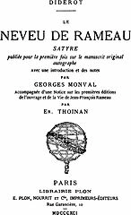

|
Die Bildung und ihr Reich der Wirklichkeit
Der Geist dieser Welt ist das von einem SelbstbewuÃtsein durchdrungene geistige Wesen, das sich als dieses für sich seiende unmittelbar gegenwärtig und das Wesen als eine Wirklichkeit sich gegenüber weiÃ. Aber das Dasein dieser Welt sowie die Wirklichkeit des SelbstbewuÃtseins beruht auf der Bewegung, daà dieses seiner Persönlichkeit sich entäuÃert, hierdurch seine Welt hervorbringt und sich gegen sie als eine fremde so verhält, daà es sich ihrer nunmehr zu bemächtigen hat. Aber die Entsagung seines Fürsichseins ist selbst die Erzeugung der Wirklichkeit, und durch sie bemächtigt es sich also unmittelbar derselben. - Oder das SelbstbewuÃtsein ist nur etwas, es hat nur Realität, insofern es sich selbst entfremdet; hierdurch setzt es sich als Allgemeines, und diese seine Allgemeinheit ist sein Gelten und Wirklichkeit. Diese Gleichheit mit Allen ist daher nicht jene Gleichheit des Rechts, nicht jenes unmittelbare Anerkanntsein und Gelten des SelbstbewuÃtseins, darum weil es ist; sondern daà es gelte, ist durch die entfremdende Vermittlung, sich dem Allgemeinen gemäà gemacht zu haben.
Die geistlose Allgemeinheit des Rechts nimmt jede natürliche Weise des Charakters wie des Daseins in sich auf und berechtigt sie. Die Allgemeinheit aber, welche hier gilt, ist die gewordene, und darum ist sie wirklich.
Wodurch also das Individuum hier Gelten und Wirklichkeit hat, ist die Bildung. Seine wahre ursprüngliche Natur und Substanz ist der Geist der Entfremdung des natürlichen Seins.
Diese EntäuÃerung ist daher ebenso Zweck als Dasein desselben; sie ist zugleich das Mittel oder der Ãbergang sowohl der gedachten Substanz in die Wirklichkeit als umgekehrt der bestimmten Individualität in die Wesentlichkeit. Diese Individualität bildet sich zu dem, was sie an sich ist, und erst dadurch ist sie an sich und hat wirkliches Dasein; soviel sie Bildung hat, soviel Wirklichkeit und Macht. Obwohl das Selbst als Dieses sich hier wirklich weiÃ, so besteht doch seine Wirklichkeit allein in dem Aufheben des natürlichen Selbsts; die ursprünglich bestimmte Natur reduziert sich daher auf den unwesentlichen Unterschied der GröÃe, auf eine gröÃere oder geringere Energie des Willens. Zweck und Inhalt aber desselben gehört allein der allgemeinen Substanz selbst an und kann nur ein Allgemeines sein; die Besonderheit einer Natur, die Zweck und Inhalt wird, ist etwas Unmächtiges und Unwirkliches; sie ist eine Art, die sich vergeblich und lächerlich abmüht, sich ins Werk zu setzen; sie ist der Widerspruch, dem Besonderen die Wirklichkeit zu geben, die unmittelbar das Allgemeine ist.
Wenn daher fälschlicherweise die Individualität in die Besonderheit der Natur und des Charakters gesetzt wird, so finden sich in der realen Welt keine Individualitäten und Charaktere, sondern die Individuen haben ein gleiches Dasein füreinander; jene vermeintliche Individualität ist eben nur das gemeinte Dasein, welches in dieser Welt, worin nur das SichselbstentäuÃernde und darum nur das Allgemeine Wirklichkeit erhält, kein Bleiben hat.
- Das Gemeinte gilt darum für das, was es ist, für eine Art. Art ist nicht ganz dasselbe, was Espèce, "von allen Spitznamen der fürchterlichste; denn er bezeichnet die MittelmäÃigkeit und drückt die höchste Stufe der Verachtung aus".1) Art und in seiner Art gut sein ist aber ein deutscher Ausdruck, welcher dieser Bedeutung die ehrliche Miene hinzufügt, als ob es nicht so schlimm gemeint sei, oder auch in der Tat das BewuÃtsein, was Art und was Bildung und Wirklichkeit ist, noch nicht in sich schlieÃt.
Was in Beziehung auf das einzelne Individuum als seine Bildung erscheint, ist das wesentliche Moment der Substanz selbst, nämlich das unmittelbare Ãbergehen ihrer gedachten Allgemeinheit in die Wirklichkeit, oder die einfache Seele derselben, wodurch das Ansich Anerkanntes und Dasein ist.
Die Bewegung der sich bildenden Individualität ist daher unmittelbar das Werden derselben als des allgemeinen gegenständlichen Wesens, d. h. das Werden der wirklichen Welt. Diese, obwohl geworden durch die Individualität, ist für das SelbstbewuÃtsein ein unmittelbar Entfremdetes und hat für es die Form unverrückter Wirklichkeit. Aber gewià zugleich, daà sie seine Substanz ist, geht es, sich derselben zu bemächtigen; es erlangt diese Macht über sie durch die Bildung, welche von dieser Seite so erscheint,
daà es sich der Wirklichkeit gemäà macht und so viel, als die Energie des ursprünglichen Charakters und Talents ihm zuläÃt. Was hier als die Gewalt des Individuums erscheint, unter welche die Substanz komme und hiermit aufgehoben werde, ist dasselbe, was die Verwirklichung der letzteren ist.
Denn die Macht des Individuums besteht darin, daà es sich ihr gemäà macht, d. h. daà es sich seines Selbsts entäuÃert, also sich als die gegenständliche seiende Substanz setzt. Seine Bildung und seine eigene Wirklichkeit ist daher die Verwirklichung der Substanz selbst.
Das Selbst ist sich nur als aufgehobenes wirklich. Es macht daher für es nicht die Einheit des BewuÃtseins seiner selbst und des Gegenstandes aus; sondern dieser ist ihm das Negative seiner.
- Durch das Selbst als die Seele wird die Substanz also so in ihren Momenten ausgebildet, daà das Entgegengesetzte das Andere begeistet, jedes durch seine Entfremdung dem Anderen Bestehen gibt und es ebenso von ihm erhält. Zugleich hat jedes Moment seine Bestimmtheit als ein unüberwindliches Gelten und eine feste Wirklichkeit gegen das Andere.
Das Denken fixiert diesen Unterschied auf die allgemeinste Weise durch die absolute Entgegensetzung von Gut und Schlecht, die, sich fliehend, auf keine Weise dasselbe werden können. Aber dieses feste Sein hat zu seiner Seele den unmittelbaren Ãbergang in das Entgegengesetzte; das Dasein ist vielmehr die Verkehrung jeder Bestimmtheit in ihre entgegengesetzte, und nur diese Entfremdung ist das Wesen und Erhaltung des Ganzen. Diese verwirklichende Bewegung und Begeistung der Momente ist nun zu betrachten; die Entfremdung wird sich selbst entfremden und das Ganze durch sie in seinen Begriff sich zurücknehmen.
Zuerst ist die einfache Substanz selbst in der unmittelbaren Organisation ihrer daseienden, noch unbegeisteten Momente zu betrachten. - Wie die Natur sich in die allgemeinen Elemente auslegt - worunter die Luft das bleibende, rein allgemeine durchsichtige Wesen ist, das Wasser aber das Wesen, das immer aufgeopfert wird, das Feuer ihre beseelende Einheit, welche ihren Gegensatz ebenso immer auflöst als ihre Einfachheit in ihn entzweit, die Erde endlich der feste Knoten dieser Gliederung und das Subjekt dieser Wesen wie ihres Prozesses, ihr Ausgehen und ihre Rückkehr ist -, so legt sich in eben solche allgemeine, aber geistige Massen das innere Wesen oder der einfache Geist der selbstbewuÃten Wirklichkeit als eine Welt aus, - in die erste Masse, das an sich allgemeine, sich selbst gleiche geistige Wesen; in die andere, das fürsichseiende, in sich ungleich gewordene, sich aufopfernde und hingebende Wesen; und in das dritte, welches als SelbstbewuÃtsein Subjekt ist und die Kraft des Feuers unmittelbar an ihm selbst hat. Im ersten Wesen ist es seiner als des Ansichseins bewuÃt, in dem zweiten aber hat es das Werden des Fürsichseins durch die Aufopferung des Allgemeinen. Der Geist aber selbst ist das Anundfürsichsein des Ganzen, das sich in die Substanz als bleibende und in sie als sich aufopfernde entzweit und ebenso sie auch wieder in seine Einheit zurücknimmt, sowohl als die ausbrechende, sie verzehrende Flamme wie als die bleibende Gestalt derselben.
- Wir sehen, daà diese Wesen dem Gemeinwesen und der Familie der sittlichen Welt entsprechen,
ohne aber den heimischen Geist zu besitzen, den diese haben; dagegen, wenn diesem das Schicksal fremd ist, so ist und weià sich hier das SelbstbewuÃtsein als die wirkliche Macht derselben.
Diese Glieder sind, sowohl wie sie zunächst innerhalb des reinen BewuÃtseins als Gedanken oder ansichseiende, als auch wie sie im wirklichen BewuÃtsein als gegenständliche Wesen vorgestellt werden, zu betrachten. - In jener Form der Einfachheit ist das erste, als das sich selbst gleiche, unmittelbare und unwandelbare Wesen aller BewuÃtsein, das Gute, - die unabhängige geistige Macht des Ansich, bei der die Bewegung des fürsichseienden BewuÃtseins nur beiherspielt. Das andere dagegen ist das passive geistige Wesen oder das Allgemeine, insofern es sich preisgibt und die Individuen das BewuÃtsein ihrer Einzelheit sich an ihm nehmen läÃt; es ist das nichtige Wesen, das Schlechte.
- Dieses absolute Aufgelöstwerden des Wesens ist selbst bleibend; wie das erste Wesen Grundlage, Ausgangspunkt und Resultat der Individuen und diese rein allgemein darin sind, so ist das zweite dagegen einerseits das sich aufopfernde Sein für Anderes, andrerseits eben darum deren beständige Rückkehr zu sich selbst als das Einzelne und ihr bleibendes Fürsichwerden.
Aber diese einfachen Gedanken des Guten und Schlechten sind ebenso unmittelbar sich entfremdet; sie sind wirklich und im wirklichen BewuÃtsein als gegenständliche Momente.
So ist das erste Wesen die Staatsmacht, das andere der Reichtum.
- Die Staatsmacht ist wie die einfache Substanz so das allgemeine Werk, die absolute Sache selbst, worin den Individuen ihr Wesen ausgesprochen und ihre Einzelheit schlechthin nur BewuÃtsein ihrer Allgemeinheit ist; sie ist ebenso das Werk und einfache Resultat, aus welchem dies, daà es aus ihrem Tun herkommt, verschwindet; es bleibt die absolute Grundlage und Bestehen alles ihres Tuns.
- Diese einfache ätherische Substanz ihres Lebens ist durch diese Bestimmung ihrer unwandelbaren Sichselbstgleichheit Sein und damit nur Sein für Anderes.
Sie ist also an sich unmittelbar das Entgegengesetzte ihrer selbst, Reichtum.
Ob er zwar das Passive oder Nichtige ist, ist er ebenfalls allgemeines geistiges Wesen, ebenso das beständig werdende Resultat der Arbeit und des Tuns Aller, wie es sich wieder in den Genuà Aller auflöst. In dem Genusse wird die Individualität zwar für sich oder als einzelne, aber dieser Genuà selbst ist Resultat des allgemeinen Tuns, so wie er gegenseitig die allgemeine Arbeit und den Genuà aller hervorbringt. Das Wirkliche hat schlechthin die geistige Bedeutung, unmittelbar allgemein zu sein.
Es meint wohl in diesem Momente jeder Einzelne eigennützig zu handeln; denn es ist das Moment, worin er sich das BewuÃtsein gibt, für sich zu sein, und er nimmt es deswegen nicht für etwas Geistiges; allein auch nur äuÃerlich angesehen zeigt es sich, daà in seinem Genusse jeder allen zu genieÃen gibt, in seiner Arbeit ebenso für alle arbeitet als für sich und alle für ihn. Sein Fürsichsein ist daher an sich allgemein und der Eigennutz etwas nur Gemeintes, das nicht dazu kommen kann, dasjenige wirklich zu machen, was es meint, nämlich etwas zu tun, das nicht allen zugut käme.
In diesen beiden geistigen Mächten erkennt also das SelbstbewuÃtsein seine Substanz, Inhalt und Zweck; es schaut sein Doppelwesen darin an, in der einen sein Ansichsein, in der anderen sein Fürsichsein.
- Es ist aber zugleich, als der Geist, die negative Einheit ihres Bestehens und der Trennung der Individualität und des Allgemeinen oder der Wirklichkeit und des Selbsts. Herrschaft und Reichtum sind daher für das Individuum als Gegenstände vorhanden, d. h. als solche, von denen es sich frei weià und zwischen denen und selbst keines von beiden wählen zu können meint. Es tritt als dieses freie und reine BewuÃtsein dem Wesen als einem solchen gegenüber, das nur für es ist. Es hat alsdann das Wesen als Wesen in sich.
- In diesem reinen BewuÃtsein sind ihm die Momente der Substanz nicht Staatsmacht und Reichtum, sondern die Gedanken von Gut und Schlecht.
- Das SelbstbewuÃtsein ist aber ferner die Beziehung seines reinen BewuÃtseins auf sein wirkliches, des Gedachten auf das gegenständliche Wesen, es ist wesentlich das Urteil.
- Es hat sich zwar schon für die beiden Seiten des wirklichen Wesens durch ihre unmittelbaren Bestimmungen ergeben, welche das Gute und welche das Schlechte sei; jenes die Staatsmacht, dies der Reichtum. Allein dies erste Urteil kann nicht als ein geistiges Urteil angesehen werden; denn in ihm ist die eine Seite nur als das Ansichseiende oder Positive, die andere nur als das Fürsichseiende und Negative bestimmt worden.
Aber sie sind, als geistige Wesen, jedes die Durchdringung beider Momente, also in jenen Bestimmungen nicht erschöpft, und das SelbstbewuÃtsein, das sich auf sie bezieht, ist an und für sich; es muà daher sich auf jedes auf die gedoppelte Weise beziehen, wodurch sich ihre Natur, sich selbst entfremdete Bestimmungen zu sein, herauskehren wird.
Dem SelbstbewuÃtsein ist nun derjenige Gegenstand gut und an sich, worin es sich selbst, derjenige aber schlecht, worin es das Gegenteil seiner findet; das Gute ist die Gleichheit der gegenständlichen Realität mit ihm, das Schlechte aber ihre Ungleichheit. Zugleich was für es gut und schlecht ist, ist an sich gut und schlecht; denn es ist eben dasjenige, worin diese beiden Momente des Ansich- und des Für-es-Seins dasselbe sind; es ist der wirkliche Geist der gegenständlichen Wesen und das Urteil der Erweis seiner Macht an ihnen, die sie zu dem macht, was sie an sich sind. Nicht dies, wie sie unmittelbar an sich selbst das Gleiche oder Ungleiche, d. h. das abstrakte Ansich- oder Fürsichsein sind, ist ihr Kriterium und ihre Wahrheit, sondern was sie in der Beziehung des Geistes auf sie sind: ihre Gleichheit oder Ungleichheit mit ihm. Seine Beziehung auf sie, die zuerst als Gegenstände gesetzt, durch ihn zum Ansich werden, wird zugleich ihre Reflexion in sich selbst, durch welche sie wirkliches geistiges Sein erhalten und, was ihr Geist ist, hervortritt. Aber wie ihre erste unmittelbare Bestimmung sich von der Beziehung des Geistes auf sie unterscheidet, so wird auch das dritte, der eigene Geist derselben, sich von dem zweiten unterscheiden. - Das zweite Ansich derselben zunächst, das durch die Beziehung des Geistes auf sie hervortritt, muà schon anders ausfallen als das unmittelbare; denn diese Vermittlung des Geistes bewegt vielmehr die unmittelbare Bestimmtheit und macht sie zu etwas anderem.
Hiernach findet nun das an und für sich seiende BewuÃtsein in der Staatsmacht wohl sein einfaches Wesen und Bestehen überhaupt, allein nicht seine Individualität als solche, wohl sein Ansich-, nicht sein Fürsichsein, es findet darin vielmehr das Tun als einzelnes Tun verleugnet und zum Gehorsam unterjocht. Das Individuum reflektiert sich also vor dieser Macht in sich selbst; sie ist ihm das unterdrückende Wesen und das Schlechte; denn statt das Gleiche zu sein, ist sie das der Individualität schlechthin Ungleiche. - Hingegen der Reichtum ist das Gute; er geht auf allgemeinen GenuÃ, gibt sich preis und verschafft allen das BewuÃtsein ihres Selbsts. Er ist an sich allgemeines Wohltun; wenn er irgendeine Wohltat versagt und nicht jedem Bedürfnisse gefällig ist, so ist dies eine Zufälligkeit, welche seinem allgemeinen notwendigen Wesen, sich allen Einzelnen mitzuteilen und tausendhändiger Geber zu sein, keinen Eintrag tut.
Diese beiden Urteile geben den Gedanken von Gut und Schlecht einen Inhalt, welcher das Gegenteil von dem ist, den sie für uns hatten. - Das SelbstbewuÃtsein hat sich aber nur erst unvollständig auf seine Gegenstände bezogen, nämlich nur nach dem MaÃstabe des Fürsichseins. Aber das BewuÃtsein ist ebenso ansichseiendes Wesen und muà diese Seite gleichfalls zum MaÃstabe machen, wodurch sich erst das geistige Urteil vollendet. Nach dieser Seite spricht ihm die Staatsmacht sein Wesen aus; sie ist teils ruhendes Gesetz, teils Regierung und Befehl, welcher die einzelnen Bewegungen des allgemeinen Tuns anordnet; das eine die einfache Substanz selbst, das andere ihr sich selbst und alle belebendes und erhaltendes Tun. Das Individuum findet also darin seinen Grund und Wesen ausgedrückt, organisiert und betätigt. - Hingegen durch den Genuà des Reichtums erfährt es nicht sein allgemeines Wesen, sondern erhält nur das vergängliche BewuÃtsein und den Genuà seiner selbst als einer fürsichseienden Einzelheit und der Ungleichheit mit seinem Wesen. - Die Begriffe von Gut und Schlecht erhalten also hier den entgegengesetzten Inhalt gegen den vorherigen.
Diese beiden Weisen des Urteilens finden jede eine Gleichheit und eine Ungleichheit; das erste urteilende BewuÃtsein findet die Staatsmacht ungleich, den Genuà des Reichtums gleich mit ihm;
das zweite hingegen die erstere gleich und den letzteren ungleich mit ihm. Es ist ein zweifaches Gleichfinden und ein zweifaches Ungleichfinden, eine entgegengesetzte Beziehung auf die beiden realen Wesenheiten vorhanden. - Wir müssen dieses verschiedene Urteilen selbst beurteilen, wozu wir den aufgestellten MaÃstab anzulegen haben. Die gleichfindende Beziehung des BewuÃtseins ist hiernach das Gute, die ungleichfindende das Schlechte; und diese beiden Weisen der Beziehung sind nunmehr selbst als verschiedene Gestalten des BewuÃtseins festzuhalten. Das BewuÃtsein kommt dadurch, daà es sich auf verschiedene Weise verhält, selbst unter die Bestimmung der Verschiedenheit, gut oder schlecht zu sein, nicht danach, daà es entweder das Fürsichsein oder das reine Ansichsein zum Prinzip hätte, denn beide sind gleich wesentliche Momente; das gedoppelte Urteilen, das betrachtet wurde, stellte die Prinzipien getrennt vor und enthält daher nur abstrakte Weisen des Urteilens. Das wirkliche BewuÃtsein hat beide Prinzipien an ihm, und der Unterschied fällt allein in sein Wesen, nämlich in die Beziehung seiner selbst auf das Reale.
Die Weise dieser Beziehung ist die entgegengesetzte, die eine ist Verhalten zu Staatsmacht und Reichtum als zu einem Gleichen, die andere als zu einem Ungleichen. - Das BewuÃtsein der gleichfindenden Beziehung ist das edelmütige. In der öffentlichen Macht betrachtet es das mit ihm Gleiche, daà es in ihr sein einfaches Wesen und dessen Betätigung hat und im Dienste des wirklichen Gehorsams wie der inneren Achtung gegen es steht. Ebenso in dem Reichtume, daà er ihm das BewuÃtsein seiner anderen wesentlichen Seite, des Fürsichseins, verschafft; daher es ihn ebenfalls als Wesen in Beziehung auf sich betrachtet und denjenigen, von welchem es genieÃt, als Wohltäter anerkennt und sich zum Danke verpflichtet hält.
Das BewuÃtsein der anderen Beziehung dagegen ist das niederträchtige, das die Ungleichheit mit den beiden Wesenheiten festhält, in der Herrschergewalt also eine Fessel und Unterdrückung des Fürsichseins sieht und daher den Herrscher haÃt, nur mit Heimtücke gehorcht und immer auf dem Sprunge zum Aufruhr steht, - im Reichtum, durch den es zum Genusse seines Fürsichseins gelangt, ebenso nur die Ungleichheit, nämlich mit dem bleibenden Wesen betrachtet; indem es durch ihn nur zum BewuÃtsein der Einzelheit und des vergänglichen Genusses kommt, ihn liebt, aber verachtet, und mit dem Verschwinden des Genusses, des an sich Verschwindenden, auch sein Verhältnis zu dem Reichen für verschwunden ansieht.
Diese Beziehungen drücken nun erst das Urteil aus, die Bestimmung dessen, was die beiden Wesen als Gegenstände für das BewuÃtsein sind, noch nicht an und für sich. Die Reflexion, die im Urteil vorgestellt ist, ist teils erst für uns ein Setzen der einen sowie der anderen Bestimmung und daher ein gleiches Aufheben beider, noch nicht die Reflexion derselben für das BewuÃtsein selbst. Teils sind sie erst unmittelbar Wesen, weder dies geworden noch an ihnen SelbstbewuÃtsein; dasjenige, für welches sie sind, ist noch nicht ihre Belebung; sie sind Prädikate, die noch nicht selbst Subjekt sind. Um dieser Trennung willen fällt auch das Ganze des geistigen Urteilens noch an zwei BewuÃtsein auseinander,
deren jedes unter einer einseitigen Bestimmung liegt. - Wie sich nun zuerst die Gleichgültigkeit der beiden Seiten der Entfremdung - der einen, des Ansich des reinen BewuÃtseins, nämlich der bestimmten Gedanken von Gut und Schlecht; der andern, ihres Daseins als Staatsmacht und Reichtum
- zur Beziehung beider, zum Urteil erhob, so hat sich diese äuÃere Beziehung zur inneren Einheit oder als Beziehung des Denkens zur Wirklichkeit zu erheben und der Geist der beiden Gestalten des Urteils hervorzutreten. Dies geschieht, indem das Urteil zum Schlusse wird, zur vermittelnden Bewegung, worin die Notwendigkeit und Mitte der beiden Seiten des Urteils hervortritt.
Das edelmütige BewuÃtsein findet also im Urteil sich so der Staatsmacht gegenüber, daà sie zwar noch nicht ein Selbst, sondern erst die allgemeine Substanz, deren es aber als seines Wesens, als des Zwecks und absoluten Inhalts sich bewuÃt ist. Sich so positiv auf sie beziehend, verhält es sich negativ gegen seine eigenen Zwecke, seinen besonderen Inhalt und Dasein, und läÃt sie verschwinden.
Es ist der Heroismus des Dienstes, - die Tugend, welche das einzelne Sein dem Allgemeinen aufopfert und dies dadurch ins Dasein bringt, - die Person, welche dem Besitze und Genusse von selbst entsagt und für die vorhandene Macht handelt und wirklich ist.
Durch diese Bewegung wird das Allgemeine mit dem Dasein überhaupt zusammengeschlossen, wie das daseiende BewuÃtsein durch diese EntäuÃerung sich zur Wesentlichkeit bildet. Wessen dieses im Dienste sich entfremdet, ist sein in das Dasein versenktes BewuÃtsein; das sich entfremdete Sein ist aber das Ansich; es bekommt also durch diese Bildung Achtung vor sich selbst und bei den anderen.
- Die Staatsmacht aber, die nur erst das gedachte Allgemeine, das Ansich war, wird durch eben diese Bewegung zum seienden Allgemeinen, zur wirklichen Macht. Sie ist diese nur in dem wirklichen Gehorsam, welchen sie durch das Urteil des SelbstbewuÃtseins, daà sie das Wesen ist, und durch die freie Aufopferung desselben erlangt. Dieses Tun, das das Wesen mit dem Selbst zusammenschlieÃt, bringt die gedoppelte Wirklichkeit hervor, sich als das, welches wahre Wirklichkeit hat, und die Staatsmacht als das Wahre, welches gilt.
Diese ist aber durch diese Entfremdung noch nicht ein sich als Staatsmacht wissendes SelbstbewuÃtsein; es ist nur ihr Gesetz oder ihr Ansich, das gilt; sie hat noch keinen besonderen Willen; denn noch hat das dienende SelbstbewuÃtsein nicht sein reines Selbst entäuÃert und die Staatsmacht damit begeistet, sondern erst mit seinem Sein; ihr nur sein Dasein aufgeopfert, nicht sein Ansichsein.
- Dies SelbstbewuÃtsein gilt als ein solches, das dem Wesen gemäà ist, es ist anerkannt um seines Ansichseins willen. Die anderen finden in ihm ihr Wesen betätigt, nicht aber ihr Fürsichsein, - ihr Denken oder reines BewuÃtsein erfüllt, nicht ihre Individualität. Es gilt daher in ihren Gedanken und genieÃt der Ehre. Es ist der stolze Vasall, der für die Staatsmacht tätig ist, insofern sie nicht eigener Willen, sondern wesentlicher ist, und der sich nur in dieser Ehre gilt, nur in dem wesentlichen Vorstellen der allgemeinen Meinung, nicht in dem dankbaren der Individualität, denn dieser hat er nicht zu ihrem Fürsichsein verholfen. Seine Sprache, wenn es sich zum eigenen Willen der Staatsmacht verhielte, der noch nicht geworden ist, wäre der Rat, den es zum allgemeinen Besten erteilt.
Die Staatsmacht ist daher noch willenlos gegen den Rat und nicht entscheidend zwischen den verschiedenen Meinungen über das allgemeine Beste. Sie ist noch nicht Regierung und somit noch nicht in Wahrheit wirkliche Staatsmacht.
- Das Fürsichsein, der Wille, der als Wille noch nicht aufgeopfert ist, ist der innere abgeschiedene Geist der Stände, der seinem Sprechen vom allgemeinen Besten gegenüber sich sein besonderes Bestes vorbehält und dies Geschwätz vom allgemeinen Besten zu einem Surrogate für das Handeln zu machen geneigt ist. Die Aufopferung des Daseins, die im Dienste geschieht, ist zwar vollständig, wenn sie bis zum Tode fortgegangen ist; aber die bestandene Gefahr des Todes
selbst, der überlebt wird, läÃt ein bestimmtes Dasein und damit ein besonderes Fürsich übrig, welches den Rat fürs allgemeine Beste zweideutig und verdächtig macht und sich in der Tat die eigene Meinung und den besonderen Willen gegen die Staatsgewalt vorbehält. Es verhält sich daher noch ungleich gegen dieselbe und fällt unter die Bestimmung des niederträchtigen BewuÃtseins, immer auf dem Sprunge zur Empörung zu stehen.
Dieser Widerspruch, den es aufzuheben hat, enthält in dieser Form, in der Ungleichheit des Fürsichseins gegen die Allgemeinheit der Staatsmacht zu stehen, zugleich die Form, daà jene EntäuÃerung des Daseins, indem sie sich, im Tode nämlich, vollendet, selbst eine seiende, nicht eine ins BewuÃtsein zurückkehrende ist, - daà dieses sie nicht überlebt und an und für sich ist, sondern nur ins unversöhnte Gegenteil übergeht. Die wahre Aufopferung des Fürsichseins ist daher allein die, worin es sich so vollkommen als im Tode hingibt, aber in dieser EntäuÃerung sich ebensosehr erhält; es wird dadurch als das wirklich, was es an sich ist, als die identische Einheit seiner selbst und seiner als des Entgegengesetzten. Dadurch, daà der abgeschiedene innere Geist, das Selbst als solches, hervortritt und sich entfremdet, wird zugleich die Staatsmacht zu eigenem Selbst erhoben; so wie ohne diese Entfremdung die Handlungen der Ehre, des edlen BewuÃtseins und die Ratschläge seiner Einsicht das Zweideutige bleiben würden, das noch jenen abgeschiedenen Hinterhalt der besonderen Absicht und des Eigenwillens hätte.
Diese Entfremdung aber geschieht allein in der Sprache, welche hier in ihrer eigentümlichen Bedeutung auftritt. - In der Welt der Sittlichkeit Gesetz und Befehl, in der Welt der Wirklichkeit erst Rat, hat sie das Wesen zum Inhalte und ist dessen Form; hier aber erhält sie die Form, welche sie ist, selbst zum Inhalte und gilt als Sprache; es ist die Kraft des Sprechens als eines solchen, welche das ausführt, was auszuführen ist. Denn sie ist das Dasein des reinen Selbsts, als Selbsts; in ihr tritt die für sich seiende Einzelheit des SelbstbewuÃtseins als solche in die Existenz, so daà sie für andere ist. Ich als dieses reine Ich ist sonst nicht da; in jeder anderen ÃuÃerung ist es in eine Wirklichkeit versenkt und in einer Gestalt, aus welcher es sich zurückziehen kann; es ist aus seiner Handlung wie aus seinem physiognomischen Ausdrucke in sich reflektiert und läÃt solches unvollständige Dasein, worin immer ebensosehr zuviel als zuwenig ist, entseelt liegen. Die Sprache aber enthält es in seiner Reinheit, sie allein spricht Ich aus, es selbst. Dies sein Dasein ist als Dasein eine Gegenständlichkeit, welche seine wahre Natur an ihr hat. Ich ist dieses Ich - aber ebenso allgemeines; sein Erscheinen ist ebenso unmittelbar die EntäuÃerung und das Verschwinden dieses Ichs und dadurch sein Bleiben in seiner Allgemeinheit. Ich, das sich ausspricht, ist vernommen; es ist eine Ansteckung, worin es unmittelbar in die Einheit mit denen, für welche es da ist, übergegangen und allgemeines SelbstbewuÃtsein ist. - Daà es vernommen wird, darin ist sein Dasein selbst unmittelbar verhallt; dies sein Anderssein ist in sich zurückgenommen; und eben dies ist sein Dasein, als selbstbewuÃtes Jetzt, wie es da ist, nicht da zu sein und durch dies Verschwinden da zu sein. Dies Verschwinden ist also selbst unmittelbar sein Bleiben; es ist sein eigenes Wissen von sich und sein Wissen von sich als einem, das in anderes Selbst übergegangen, das vernommen worden und allgemeines ist.
Der Geist erhält hier diese Wirklichkeit, weil die Extreme, deren Einheit er ist, ebenso unmittelbar die Bestimmung haben, für sich eigene Wirklichkeiten zu sein. Ihre Einheit ist zersetzt in spröde Seiten, deren jede für die andere wirklicher, von ihr ausgeschlossener Gegenstand ist. Die Einheit tritt daher als eine Mitte hervor, welche von der abgeschiedenen Wirklichkeit der Seiten ausgeschlossen und unterschieden wird; sie hat daher selbst eine wirkliche, von ihren Seiten unterschiedene Gegenständlichkeit und
ist für sie, d. h. sie ist Daseiendes. Die geistige Substanz tritt als solche in die Existenz, erst indem sie zu ihren Seiten solche SelbstbewuÃtsein gewonnen hat, welche dieses reine Selbst als unmittelbar geltende Wirklichkeit wissen und darin ebenso unmittelbar wissen, dies nur durch die entfremdende Vermittlung zu sein. Durch jenes sind die Momente zu der sich selbst wissenden Kategorie und damit bis dahin geläutert, daà sie Momente des Geistes sind; durch dieses tritt er als Geistigkeit in das Dasein.
- Er ist so die Mitte, welche jene Extreme voraussetzt und durch ihr Dasein erzeugt wird, - aber ebenso das zwischen ihnen hervorbrechende geistige Ganze, das sich in sie entzweit und jedes erst durch diese Berührung zum Ganzen in seinem Prinzip erzeugt. - Daà die beiden Extreme schon an sich aufgehoben und zersetzt sind, bringt ihre Einheit hervor, und diese ist die Bewegung, welche beide zusammenschlieÃt, ihre Bestimmungen austauscht und sie, und zwar in jedem Extreme, zusammenschlieÃt. Diese Vermittlung setzt hiermit den Begriff eines jeden der beiden Extreme in seine Wirklichkeit, oder sie macht das, was jedes an sich ist, zu seinem Geiste.
Die beiden Extreme, die Staatsmacht und das edelmütige BewuÃtsein, sind durch dieses zersetzt,
jene in das abstrakte Allgemeine, dem gehorcht wird, und in den fürsichseienden Willen, welcher ihm aber noch nicht selbst zukommt, - dieses in den Gehorsam des aufgehobenen Daseins oder in das Ansichsein der Selbstachtung und der Ehre und in das noch nicht aufgehobene reine Fürsichsein, den im Hinterhalte noch bleibenden Willen. Die beiden Momente, zu welchen beide Seiten gereinigt und die daher Momente der Sprache sind, sind das abstrakte Allgemeine, welches das allgemeine Beste heiÃt, und das reine Selbst, das im Dienste seinem ins vielfache Dasein versenkten BewuÃtsein absagte. Beide sind im Begriffe dasselbe; denn reines Selbst ist eben das abstrakt Allgemeine, und daher ist ihre Einheit als ihre Mitte gesetzt. Aber das Selbst ist nur erst am Extreme des BewuÃtseins wirklich, - das Ansich aber erst am Extreme der Staatsmacht; dem BewuÃtsein fehlt dies, daà die Staatsmacht nicht nur als Ehre, sondern wirklich an es übergegangen wäre, - der Staatsmacht, daà ihr nicht nur als dem sogenannten allgemeinen Besten gehorcht würde, sondern als Willen, oder daà sie das entscheidende Selbst ist. Die Einheit des Begriffs, in welchem die Staatsmacht noch steht und zu dem das BewuÃtsein sich geläutert hat, wird in dieser vermittelnden Bewegung wirklich, deren einfaches Dasein, als Mitte, die Sprache ist.
- Sie hat jedoch zu ihren Seiten noch nicht zwei als Selbst vorhandene Selbst; denn die Staatsmacht wird erst zum Selbst begeistet; diese Sprache ist daher noch nicht der Geist, wie er sich vollkommen weià und ausspricht.
Das edelmütige BewuÃtsein, weil es das Extrem des Selbsts ist, erscheint als dasjenige, von dem die Sprache ausgeht, durch welche sich die Seiten des Verhältnisses zu beseelten Ganzen gestalten.
- Der Heroismus des stummen Dienstes wird zum Heroismus der Schmeichelei.
Diese sprechende Reflexion des Dienstes macht die geistige, sich zersetzende Mitte aus und reflektiert nicht nur ihr eigenes Extrem in sich selbst, sondern auch das Extrem der allgemeinen Gewalt in dieses selbst zurück und macht sie, die erst an sich ist, zum Fürsichsein und zur Einzelheit des SelbstbewuÃtseins. Es wird hierdurch der Geist dieser Macht, ein unumschränkter Monarch zu sein; - unumschränkt: die Sprache der Schmeichelei erhebt die Macht in ihre geläuterte Allgemeinheit; das Moment als Erzeugnis der Sprache, des zum Geiste geläuterten Daseins, ist eine gereinigte Sichselbstgleichheit; - Monarch: sie erhebt ebenso die Einzelheit auf ihre Spitze; dasjenige, dessen das edelmütige BewuÃtsein sich nach dieser Seite der einfachen geistigen Einheit entäuÃert, ist das reine Ansich seines Denkens, sein Ich selbst. Bestimmter erhebt sie die Einzelheit, die sonst nur ein Gemeintes ist, dadurch in ihre daseiende Reinheit, daà sie dem Monarchen den eigenen Namen gibt; denn es ist allein der Name, worin der Unterschied des Einzelnen von allen anderen nicht gemeint ist, sondern von allen wirklich gemacht wird; in dem Namen gilt der Einzelne als rein Einzelner nicht mehr nur in seinem BewuÃtsein, sondern im BewuÃtsein aller. Durch ihn also wird der Monarch schlechthin von allen abgesondert, ausgenommen und einsam; in ihm ist er das Atom, das von seinem Wesen nichts mitteilen kann und nicht seinesgleichen hat.
- Dieser Name ist hiermit die Reflexion-in-sich oder die Wirklichkeit, welche die allgemeine Macht an ihr selbst hat; durch ihn ist sie der Monarch.
Er, dieser Einzelne, weià umgekehrt dadurch sich, diesen Einzelnen, als die allgemeine Macht, daà die Edlen nicht nur als zum Dienst der Staatsmacht bereit, sondern als Zierate sich um den Thron stellen und daà sie dem, der darauf sitzt, es immer sagen, was er ist.
Die Sprache ihres Preises ist auf diese Weise der Geist, der in der Staatsmacht selbst die beiden Extreme zusammenschlieÃt; sie reflektiert die abstrakte Macht in sich und gibt ihr das Moment des anderen Extrems, das wollende und entscheidende Fürsichsein, und hierdurch selbstbewuÃte Existenz; oder dadurch kommt dies einzelne wirkliche SelbstbewuÃtsein dazu, sich als die Macht gewià zu wissen. Sie ist der Punkt des Selbsts, in den durch die EntäuÃerung der inneren GewiÃheit die vielen Punkte zusammengeflossen sind. - Indem aber dieser eigene Geist der Staatsmacht darin besteht, seine Wirklichkeit und Nahrung an dem Opfer des Tuns und des Denkens des edelmütigen BewuÃtseins zu haben, ist sie die sich entfremdete Selbständigkeit; das edelmütige BewuÃtsein, das Extrem des Fürsichseins, erhält das Extrem der wirklichen Allgemeinheit für die Allgemeinheit des Denkens,
der es sich entäuÃerte, zurück, die Macht des Staats ist auf es übergegangen. An ihm wird die Staatsgewalt erst wahrhaft betätigt; in seinem Fürsichsein hört sie auf, das träge Wesen, wie sie als Extrem des abstrakten Ansichseins erschien, zu sein. - An sich betrachtet heiÃt die in sich reflektierte Staatsmacht oder dies, daà sie Geist geworden, nichts anderes, als daà sie Moment des SelbstbewuÃtseins geworden, d. h. nur als aufgehobene ist. Hiermit ist sie nun das Wesen als ein solches, dessen Geist es
ist, aufgeopfert und preisgegeben zu sein, oder sie existiert als Reichtum. - Sie bleibt zwar dem Reichtume, zu welchem sie dem Begriffe nach immer wird, gegenüber zugleich als eine Wirklichkeit bestehen, aber eine solche, deren Begriff eben diese Bewegung ist, durch den Dienst und die Verehrung, wodurch sie wird, in ihr Gegenteil, in die EntäuÃerung der Macht, überzugehen. Für sich wird also das eigentümliche Selbst, das ihr Wille ist, durch die Wegwerfung des edelmütigen BewuÃtseins zur sich entäuÃernden Allgemeinheit, zu einer vollkommenen Einzelheit und Zufälligkeit, die jedem mächtigeren Willen preisgegeben ist; was ihm an allgemein anerkannter und nicht mitteilbarer Selbständigkeit bleibt,
ist der leere Name.
Wenn also das edelmütige BewuÃtsein sich als dasjenige bestimmte, welches sich auf die allgemeine Macht auf eine gleiche Weise bezöge, so ist die Wahrheit desselben vielmehr, in seinem Dienste sein eigenes Fürsichsein sich zu behalten, in der eigentlichen Entsagung seiner Persönlichkeit aber das wirkliche Aufheben und ZerreiÃen der allgemeinen Substanz zu sein. Sein Geist ist das Verhältnis der völligen Ungleichheit, einerseits in seiner Ehre seinen Willen zu behalten, andererseits in dem Aufgeben desselben teils seines Innern sich zu entfremden und zur höchsten Ungleichheit mit sich selbst zu werden, teils die allgemeine Substanz darin sich zu unterwerfen und diese sich selbst völlig ungleich zu machen.
- Es erhellt, daà damit seine Bestimmtheit, die es im Urteile gegen das hatte, welches niederträchtiges BewuÃtsein hieÃ, und hierdurch auch dieses verschwunden ist. Das letztere hat seinen Zweck erreicht, nämlich die allgemeine Macht unter das Fürsichsein zu bringen.
So durch die allgemeine Macht bereichert, existiert das SelbstbewuÃtsein als die allgemeine Wohltat, oder sie ist der Reichtum, der selbst wieder Gegenstand für das BewuÃtsein ist. Denn er ist diesem das zwar unterworfene Allgemeine, das aber durch dies erste Aufheben noch nicht absolut in das Selbst zurückgegangen ist. - Das Selbst hat noch nicht sich als Selbst, sondern das aufgehobene allgemeine Wesen zum Gegenstande. Indem dieser erst geworden, ist die unmittelbare Beziehung des BewuÃtseins auf ihn gesetzt, das also noch nicht seine Ungleichheit mit ihm dargestellt hat; es ist das edelmütige BewuÃtsein, welches an dem unwesentlich gewordenen Allgemeinen sein Fürsichsein erhält, daher ihn anerkennt und gegen den Wohltäter dankbar ist.
Der Reichtum hat an ihm selbst schon das Moment des Fürsichseins.
Er ist nicht das selbstlose Allgemeine der Staatsmacht oder die unbefangene unorganische Natur des Geistes, sondern sie, wie sie durch den Willen an ihr selbst festhält gegen den, der sich ihrer zum Genuà bemächtigen will. Aber indem der Reichtum nur die Form des Wesens hat, ist dies einseitige Fürsichsein, das nicht an sich, sondern vielmehr das aufgehobene Ansich ist, die in seinem Genusse wesenlose Rückkehr des Individuums in sich selbst.
Er bedarf also selbst der Belebung; und die Bewegung seiner Reflexion besteht darin, daà er, der nur für sich ist, zum Anundfürsichsein, daà er, der das aufgehobene Wesen ist, zum Wesen werde; so erhält er seinen eigenen Geist an ihm selbst. - Da vorhin die Form dieser Bewegung auseinandergesetzt worden, so ist es hinreichend, hier den Inhalt derselben zu bestimmen.
Das edelmütige BewuÃtsein bezieht sich also hier nicht auf den Gegenstand als Wesen überhaupt,
sondern es ist das Fürsichsein selbst, das ihm ein Fremdes ist; es findet sein Selbst als solches entfremdet vor, als eine gegenständliche feste Wirklichkeit, die es von einem anderen festen Fürsichsein zu empfangen hat. Sein Gegenstand ist das Fürsichsein, also das Seinige; aber dadurch, daà es Gegenstand ist, ist es zugleich unmittelbar eine fremde Wirklichkeit, welche eigenes Fürsichsein, eigener Wille ist, d. h. es sieht sein Selbst in der Gewalt eines fremden Willens, von dem es abhängt, ob er ihm dasselbe ablassen will.
Von jeder einzelnen Seite kann das SelbstbewuÃtsein abstrahieren und behält darum in einer Verbindlichkeit, die eine solche betrifft, sein Anerkanntsein und Ansichgelten als für sich seienden Wesens. Hier aber sieht es sich von der Seite seiner reinen eigensten Wirklichkeit oder seines Ichs auÃer sich und einem Anderen angehörig, sieht seine Persönlichkeit als solche abhängig von der zufälligen Persönlichkeit eines Anderen, von dem Zufall eines Augenblicks, einer Willkür oder sonst des gleichgültigsten Umstandes. - Im Rechtszustande erscheint, was in der Gewalt des gegenständlichen Wesens ist, als ein zufälliger Inhalt, von dem abstrahiert werden kann, und die Gewalt betrifft nicht das Selbst als solches, sondern dieses ist vielmehr anerkannt. Allein hier sieht es die GewiÃheit seiner, als solche das Wesenloseste, die reine Persönlichkeit, absolute Unpersönlichkeit zu sein.
Der Geist seines Danks ist daher das Gefühl wie dieser tiefsten Verworfenheit so auch der tiefsten Empörung. Indem das reine Ich selbst sich auÃer sich und zerrissen anschaut, ist in dieser Zerrissenheit zugleich alles, was Kontinuität und Allgemeinheit hat, was Gesetz, gut und recht heiÃt, auseinander und zugrunde gegangen; alles Gleiche ist aufgelöst, denn die reinste Ungleichheit, die absolute Unwesentlichkeit des absolut Wesentlichen, das AuÃersichsein des Fürsichseins ist vorhanden; das reine Ich selbst ist absolut zersetzt.
Wenn also von dem Reichtum dies BewuÃtsein wohl die Gegenständlichkeit des Fürsichseins zurückerhält und sie aufhebt, so ist es nicht nur seinem Begriffe nach, wie die vorhergehende Reflexion, nicht vollendet, sondern für es selbst unbefriedigt; die Reflexion, da das Selbst sich als ein Gegenständliches empfängt, ist der unmittelbare Widerspruch im reinen Ich selbst gesetzt. Als Selbst steht es aber zugleich unmittelbar über diesem Widerspruche, ist die absolute Elastizität, welche dies Aufgehobensein des Selbsts wieder aufhebt, diese Verworfenheit, daà ihm sein Fürsichsein als ein Fremdes werde, verwirft und, gegen dies Empfangen seiner selbst empört, im Empfangen selbst für sich ist.
Indem also das Verhältnis dieses BewuÃtseins mit dieser absoluten Zerrissenheit verknüpft ist, fällt in seinem Geiste der Unterschied desselben, als edelmütiges gegen das niederträchtige bestimmt zu sein, hinweg, und beide sind dasselbe. - Der Geist des wohltuenden Reichtums kann ferner von dem Geiste des die Wohltat empfangenden BewuÃtseins unterschieden werden und ist besonders zu betrachten.
- Er war das wesenlose Fürsichsein, das preisgegebene Wesen. Durch seine Mitteilung aber wird er zum Ansich; indem er seine Bestimmung erfüllte, sich aufzuopfern, hebt er die Einzelheit, für sich nur zu genieÃen, auf, und als aufgehobene Einzelheit ist er Allgemeinheit oder Wesen. - Was er mitteilt, was er anderen gibt, ist das Fürsichsein. Er gibt sich aber nicht hin als eine selbstlose Natur, als die unbefangen sich preisgebende Bedingung des Lebens, sondern als selbstbewuÃtes, sich für sich haltendes Wesen; er ist nicht die unorganische Macht des Elements, welche von dem empfangenden BewuÃtsein als an sich vergänglich gewuÃt wird, sondern die Macht über das Selbst, die sich unabhängig und willkürlich weià und die zugleich weiÃ, daÃ, was sie ausspendet, das Selbst eines Anderen ist.
- Der Reichtum teilt also mit dem Klienten die Verworfenheit, aber an die Stelle der Empörung tritt der Ãbermut. Denn er weià nach der einen Seite, wie der Klient, das Fürsichsein als ein zufälliges Ding; aber er selbst ist diese Zufälligkeit, in deren Gewalt die Persönlichkeit steht. In diesem Ãbermute, der durch eine Mahlzeit ein fremdes Ich-Selbst erhalten und sich dadurch die Unterwerfung von dessen innerstem Wesen erworben zu haben meint, übersieht er die innere Empörung des anderen; er übersieht die vollkommene Abwerfung aller Fessel, diese reine Zerrissenheit, welcher, indem ihr die Sichselbstgleichheit des Fürsichseins schlechthin ungleich geworden, alles Gleiche, alles Bestehen zerrissen ist und die daher die Meinung und Ansicht des Wohltäters am meisten zerreiÃt. Er steht unmittelbar vor diesem innersten Abgrunde, vor dieser bodenlosen Tiefe, worin aller Halt und Substanz verschwunden ist; und er sieht in dieser Tiefe nichts als ein gemeines Ding, ein Spiel seiner Laune, einen Zufall seiner Willkür; sein Geist ist die ganz wesenlose Meinung, die geistverlassene Oberfläche zu sein.
Wie das SelbstbewuÃtsein gegen die Staatsmacht seine Sprache hatte oder der Geist zwischen diesen Extremen als wirkliche Mitte hervortrat, so hat es auch Sprache gegen den Reichtum, noch mehr aber hat seine Empörung ihre Sprache. Jene, welche dem Reichtum das BewuÃtsein seiner Wesenheit gibt und sich seiner dadurch bemächtigt, ist gleichfalls die Sprache der Schmeichelei, aber der unedlen; - denn was sie als Wesen ausspricht, weià sie als das preisgegebene, das nicht an sich seiende Wesen. Die Sprache der Schmeichelei aber ist, wie vorhin schon erinnert, der noch einseitige Geist. Denn seine Momente sind zwar das durch die Bildung des Dienstes zur reinen Existenz geläuterte Selbst und das Ansichsein der Macht. Allein der reine Begriff, in welchem das einfache Selbst und das Ansich, jenes reine Ich und dies reine Wesen oder Denken dasselbe sind, - diese Einheit beider Seiten, zwischen welchen die Wechselwirkung stattfindet, ist nicht in dem BewuÃtsein dieser Sprache; der Gegenstand ist ihm noch das Ansich im Gegensatze gegen das Selbst, oder der Gegenstand ist ihm nicht zugleich sein eigenes Selbst als solches. - Die Sprache der Zerrissenheit aber ist die vollkommene Sprache und der wahre existierende Geist dieser ganzen Welt der Bildung. Dies SelbstbewuÃtsein, dem die seine Verworfenheit verwerfende Empörung zukommt, ist unmittelbar die absolute Sichselbstgleichheit in der absoluten Zerrissenheit, die reine Vermittlung des reinen SelbstbewuÃtseins mit sich selbst. Es ist die Gleichheit des identischen Urteils, worin eine und dieselbe Persönlichkeit sowohl Subjekt als Prädikat ist. Aber dies identische Urteil ist zugleich das unendliche; denn diese Persönlichkeit ist absolut entzweit, und Subjekt und Prädikat schlechthin gleichgültige Seiende, die einander nichts angehen, ohne notwendige Einheit, sogar daà jedes die Macht einer eigenen Persönlichkeit ist. Das Fürsichsein hat sein Fürsichsein zum Gegenstande, als ein schlechthin Anderes und zugleich ebenso unmittelbar als sich selbst, - sich als ein Anderes, nicht daà dieses einen anderen Inhalt hätte, sondern der Inhalt ist dasselbe Selbst in der Form absoluter Entgegensetzung und vollkommen eigenen gleichgültigen Daseins. - Es ist also hier der seiner in seiner Wahrheit und seines Begriffes bewuÃte Geist dieser realen Welt der Bildung vorhanden.
Er ist diese absolute und allgemeine Verkehrung und Entfremdung der Wirklichkeit und des Gedankens; die reine Bildung. Was in dieser Welt erfahren wird, ist, daà weder die wirklichen Wesen der Macht und des Reichtums noch ihre bestimmten Begriffe, Gut und Schlecht, oder das BewuÃtsein des Guten und Schlechten, das edelmütige und niederträchtige, Wahrheit haben; sondern alle diese Momente verkehren sich vielmehr eins im andern, und jedes ist das Gegenteil seiner selbst. - Die allgemeine Macht, welche die Substanz ist, indem sie durch das Prinzip der Individualität zur eigenen Geistigkeit gelangt, empfängt das eigene Selbst nur als den Namen an ihr und ist, indem sie wirkliche Macht ist, vielmehr das ohnmächtige Wesen, das sich selbst aufopfert. - Aber dies preisgegebene selbstlose Wesen oder das zum Dinge gewordene Selbst ist vielmehr die Rückkehr des Wesens in sich selbst; es ist das fürsichseiende Fürsichsein, die Existenz des Geistes. - Die Gedanken dieser Wesen, des Guten und Schlechten, verkehren sich ebenso in dieser Bewegung; was als gut bestimmt ist, ist schlecht; was als schlecht, ist gut. Das BewuÃtsein eines jeden dieser Momente, als das edle und niederträchtige BewuÃtsein beurteilt, sind in ihrer Wahrheit vielmehr ebensosehr das Verkehrte dessen, was diese Bestimmungen sein sollen, das edelmütige ebenso niederträchtig und verworfen, als die Verworfenheit zum Adel der gebildetsten Freiheit des SelbstbewuÃtseins umschlägt. - Alles ist ebenso, formell betrachtet, nach auÃen das Verkehrte dessen, was es für sich ist; und wieder was es für sich ist, ist es nicht in Wahrheit, sondern etwas anderes, als es sein will, das Fürsichsein vielmehr der Verlust seiner selbst und die Entfremdung seiner vielmehr die Selbsterhaltung. - Was vorhanden ist, ist also dies, daà alle Momente eine allgemeine Gerechtigkeit gegeneinander ausüben, jedes ebensosehr an sich selbst sich entfremdet, als es sich in sein Gegenteil einbildet und es auf diese Weise verkehrt. - Der wahre Geist aber ist eben diese Einheit der absolut Getrennten, und zwar kommt er eben durch die freie Wirklichkeit dieser selbstlosen Extreme selbst als ihre Mitte zur Existenz. Sein Dasein ist das allgemeine Sprechen und zerreiÃende Urteilen, welchem alle jene Momente, die als Wesen und wirkliche Glieder des Ganzen gelten sollen, sich auflösen und welches ebenso dies sich auflösende Spiel mit sich selbst ist. Dies Urteilen und Sprechen ist daher das Wahre und Unbezwingbare, während es alles überwältigt; dasjenige, um welches es in dieser realen Welt allein wahrhaft zu tun ist. Jeder Teil dieser Welt kommt darin dazu, daà sein Geist ausgesprochen oder daà mit Geist von ihm gesprochen und von ihm gesagt wird, was er ist. - Das ehrliche BewuÃtsein nimmt jedes Moment als eine bleibende Wesenheit und ist die ungebildete Gedankenlosigkeit, nicht zu wissen, daà es ebenso das Verkehrte tut. Das zerrissene BewuÃtsein aber ist das BewuÃtsein der Verkehrung, und zwar der absoluten Verkehrung; der Begriff ist das Herrschende in ihm, der die Gedanken zusammenbringt, welche der Ehrlichkeit weit auseinanderliegen, und dessen Sprache daher geistreich ist.
Der Inhalt der Rede des Geistes von und über sich selbst ist also die Verkehrung aller Begriffe und Realitäten, der allgemeine Betrug seiner selbst und der anderen; und die Schamlosigkeit, diesen Betrug zu sagen, ist eben darum die gröÃte. Diese Rede ist die Verrücktheit des Musikers, der "dreiÃig Arien, italienische, französische, tragische, komische, von aller Art Charakter, häufte und vermischte; bald mit einem tiefen Baà stieg er bis in die Hölle, dann zog er die Kehle zusammen, und mit einem Fistelton zerrià er die Höhe der Lüfte ... , wechselweise rasend, besänftigt, gebieterisch und spöttisch."2)
- Dem ruhigen BewuÃtsein, das ehrlicherweise die Melodie des Guten und Wahren in die Gleichheit der Töne, d. h. in eine Note setzt, erscheint diese Rede als "eine Faselei von Weisheit und Tollheit, als ein Gemisch von ebensoviel Geschick als Niedrigkeit, von ebenso richtigen als falschen Ideen, von einer so völligen Verkehrtheit der Empfindung, so vollkommener Schändlichkeit als gänzlicher Offenheit und Wahrheit. Es wird es nicht versagen können, in alle diese Töne einzugehen und die ganze Skala der Gefühle von der tiefsten Verachtung und Verwerfung bis zur höchsten Bewunderung und Rührung auf und nieder zu laufen; in diese wird ein lächerlicher Zug verschmolzen sein, der ihnen ihre Natur benimmt"3) ; jene werden an ihrer Offenheit selbst einen versöhnenden, an ihrer erschütternden Tiefe den allgewaltigen Zug haben, der den Geist sich selbst gibt.
Betrachten wir der Rede dieser sich selbst klaren Verwirrung gegenüber die Rede jenes einfachen BewuÃtseins des Wahren und Guten, so kann sie gegen die offene und ihrer bewuÃte Beredsamkeit des Geistes der Bildung nur einsilbig sein; denn es kann diesem nichts sagen, was er nicht selbst weià und sagt. Geht es über seine Einsilbigkeit hinaus, so sagt es daher dasselbe, was er ausspricht, begeht aber darin noch dazu die Torheit zu meinen, daà es etwas Neues und Anderes sage. Selbst seine Silben,
schändlich, niederträchtig, sind schon diese Torheit, denn jener sagt sie von sich selbst. Wenn dieser Geist in seiner Rede alles Eintönige verkehrt, weil dieses sich Gleiche nur eine Abstraktion, in seiner Wirklichkeit aber die Verkehrung an sich selbst ist, und wenn dagegen das gerade BewuÃtsein das Gute und Edle, d. h. das sich in seiner ÃuÃerung Gleichhaltende, auf die einzige Weise, die hier möglich ist, in Schutz nimmt - daà es nämlich seinen Wert nicht darum verliere, weil es an das Schlechte geknüpft oder mit ihm gemischt sei; denn dies sei seine Bedingung und Notwendigkeit, hierin bestehe die Weisheit der Natur -, so hat dies BewuÃtsein, indem es zu widersprechen meinte, damit nur den Inhalt der Rede des Geistes in eine triviale Weise zusammengefaÃt, welche gedankenlos, indem sie das Gegenteil des Edlen und Guten zur Bedingung und Notwendigkeit des Edlen und Guten macht, etwas anderes zu sagen meint als dies, daà das edel und gut Genannte in seinem Wesen das Verkehrte seiner selbst, so wie das Schlechte umgekehrt das Vortreffliche ist.
Ersetzt das einfache BewuÃtsein diesen geistlosen Gedanken durch die Wirklichkeit des Vortrefflichen, indem es dasselbe in dem Beispiele eines fingierten Falles oder auch einer wahren Anekdote aufführt und so zeigt, daà es kein leerer Name, sondern vorhanden ist, so steht die allgemeine Wirklichkeit des verkehrten Tuns der ganzen realen Welt entgegen, worin jenes Beispiel also nur etwas ganz Vereinzeltes, eine Espèce ausmacht; und das Dasein des Guten und Edlen als eine einzelne Anekdote, sie sei fingiert oder wahr, darstellen, ist das Bitterste, was von ihm gesagt werden kann.
- Fordert das einfache BewuÃtsein endlich die Auflösung dieser ganzen Welt der Verkehrung, so kann es nicht an das Individuum die Entfernung aus ihr fordern, denn Diogenes im Fasse ist durch sie bedingt, und die Forderung an den Einzelnen ist gerade das, was für das Schlechte gilt, nämlich für sich als Einzelnen zu sorgen. An die allgemeine Individualität aber gerichtet, kann die Forderung dieser Entfernung nicht die Bedeutung haben, daà die Vernunft das geistige gebildete BewuÃtsein, zu dem sie gekommen ist, wieder aufgebe, den ausgebreiteten Reichtum ihrer Momente in die Einfachheit des natürlichen Herzens zurückversenke und in die Wildnis und Nähe des tierischen BewuÃtseins, welche Natur auch Unschuld genannt wird, zurückfalle; sondern die Forderung dieser Auflösung kann nur an den Geist der Bildung selbst gehen, daà er aus seiner Verwirrung als Geist zu sich zurückkehre und ein noch höheres BewuÃtsein gewinne.
In der Tat aber hat der Geist dies schon an sich vollbracht. Die ihrer selbst bewuÃte und sich aussprechende Zerrissenheit des BewuÃtseins ist das Hohngelächter über das Dasein sowie über die Verwirrung des Ganzen und über sich selbst; es ist zugleich das sich noch vernehmende Verklingen dieser ganzen Verwirrung. - Diese sich selbst vernehmende Eitelkeit aller Wirklichkeit und alles bestimmten Begriffs ist die gedoppelte Reflexion der realen Welt in sich selbst; einmal in diesem Selbst des BewuÃtseins, als diesem, das andere Mal in der reinen Allgemeinheit desselben oder im Denken.
Nach jener Seite hat der zu sich gekommene Geist den Blick in die Welt der Wirklichkeit hineingerichtet und sie noch zu seinem Zwecke und unmittelbaren Inhalte; nach der andern aber ist sein Blick teils nur in sich und negativ gegen sie, teils von ihr weg gen Himmel gewendet und das Jenseits derselben sein Gegenstand.
In jener Seite der Rückkehr in das Selbst ist die Eitelkeit aller Dinge seine eigene Eitelkeit, oder
es ist eitel. Es ist das fürsichseiende Selbst, das alles nicht nur zu beurteilen und zu beschwatzen, sondern geistreich die festen Wesen der Wirklichkeit wie die festen Bestimmungen, die das Urteil setzt, in ihrem Widerspruche zu sagen weiÃ, und dieser Widerspruch ist ihre Wahrheit. Nach der Form betrachtet, weià es alles sich selbst entfremdet, das Fürsichsein vom Ansichsein getrennt, das Gemeinte und den Zweck von der Wahrheit, und von beiden wieder das Sein für Anderes, das Vorgegebene von der eigentlichen Meinung und der wahren Sache und Absicht. - Es weià also jedes Moment gegen das andere, überhaupt die Verkehrung aller, richtig auszusprechen; es weià besser, was jedes ist, als es ist, es sei bestimmt, wie es wolle. Indem es das Substantielle nach der Seite der Uneinigkeit und des Widerstreits, den es in sich einigt, aber nicht nach der Seite dieser Einigkeit kennt, versteht es das Substantielle sehr gut zu beurteilen, aber hat die Fähigkeit verloren, es zu fassen. - Diese Eitelkeit bedarf dabei der Eitelkeit aller Dinge, um aus ihnen sich das BewuÃtsein des Selbsts zu geben, erzeugt sie daher selbst und ist die Seele, welche sie trägt. Macht und Reichtum sind die höchsten Zwecke seiner Anstrengung; es weiÃ, daà es durch Entsagung und Aufopferung sich zum Allgemeinen bildet, zum Besitze desselben gelangt und in diesem Besitze allgemeine Gültigkeit hat; sie sind die wirklichen anerkannten Mächte.
Aber dieses sein Gelten ist selbst eitel; und eben indem es sich ihrer bemächtigt, weià es sie, nicht Selbstwesen zu sein, sondern vielmehr sich als ihre Macht, sie aber als eitel.
Daà es so in ihrem Besitze selbst daraus heraus ist, stellt es in der geistreichen Sprache dar, die daher sein höchstes Interesse und die Wahrheit des Ganzen ist; in ihr wird dieses Selbst, als dies reine, nicht den wirklichen noch gedachten Bestimmungen angehörige Selbst, sich zum geistigen, wahrhaft allgemeingültigen. Es ist die sich selbst zerreiÃende Natur aller Verhältnisse und das bewuÃte ZerreiÃen derselben; nur als empörtes SelbstbewuÃtsein aber weià es seine eigene Zerrissenheit, und in diesem Wissen derselben hat es sich unmittelbar darüber erhoben.
In jener Eitelkeit wird aller Inhalt zu einem Negativen, welches nicht mehr positiv gefaÃt werden kann;
der positive Gegenstand ist nur das reine Ich selbst, und das zerrissene BewuÃtsein ist an sich diese reine Sichselbstgleichheit des zu sich zurückgekommenen SelbstbewuÃtseins.
1) Diderot, Rameaus Neffe, übersetzt von Goethe, 1805 
2) Diderot, Rameaus Neffe, übersetzt von Goethe, 1805 >>>
3) Diderot, Rameaus Neffe, von Hegel zusammengerafftes Zitat
( Phänomenologie des Geistes >>>)
|